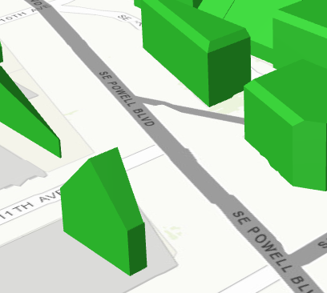
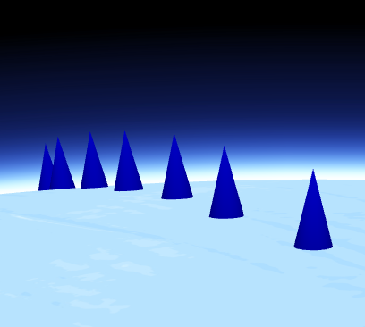

Discover 4.x
The 4.x version of the JavaScript API consists of many underlying design changes and improvements. More about these fundamentals and detailed API changes can be found in the Migrating from 3.x to 4.4 topic. Two of the most notable changes are:
Simple and consistent API
Version 4 of the API introduces an improved developer experience with a cleaner implementation. With this comes changes to how a developer should plan their application's implementation.
The following breaks down some of the main points to consider when writing applications using the 4.x API.
Constructors and properties
For additional information on getting, setting, and watching properties, please refer to the Working with properties topic.
All properties can be set within the constructor.
Prior to 4.x, many objects could be constructed in more than one way, using a number of different parameters in a specific order. This is no longer the case. Now there is only one constructor per class. Properties for a class can be set via its constructor or directly by the property itself. There is also no need to remember in which order the properties should be set.
This snippet sets the center point and scale directly in the MapView constructor.
view = new MapView({
center: [-122, 38],
scale: 12345678
});
This snippet sets an empty constructor and sets the center point and scale properties separately.
view = new MapView();
view.center = [-122, 38];
view.scale = 12345678;
Watching property changes
The standard way of working with events and watching how a property changes, via a propertyname-change event is no longer the practice. In 4.x, you now just listen for when a specific property changes using the .watch() method.
More details on working with properties can be found in the Migrating from 3.x to 4.4 topic.
3D support
Version 4.0 added support for 3D (scenes). In addition to the SceneView mapping component, this also includes support for new layer types and new 3D symbology.
The Viewpoint and Camera classes were new in 4.0. The Camera provides the visible extent of a 3D view, whereas the Viewpoint describes the point of view for either a 2D or 3D View. It can do this by either:
- Displaying an area by storing the extent of this area, or
- Displaying the cartographic representation by storing information about the scale.
In a 2D view, the Viewpoint is determined using a center point and scale value, whereas the Camera position determines it for a 3D view. This is done because scale is treated differently between 2D and 3D views.
// This code snippet works in both 2D and 3D
var viewpoint = new Viewpoint({
targetGeometry: new Point(4.4856, 48.3908),
scale: 2000
});
view.goTo(viewpoint);
3D symbology
3D symbology is new with 4.x. These symbol names contain "3D" and can be viewed within the API reference. Each 3D symbol may consist of several symbol layers. Because of this, a single graphic and/or geometry can be symbolized in multiple ways. Below is an example of two different types of 3D symbology.
| 3D Fill Symbol | 3D Object Symbol |
|---|---|
|  |  |
Dojo
Version 4.4 of the ArcGIS API for JavaScript uses Dojo 1.11.2 and dgrid version 1.1.0.